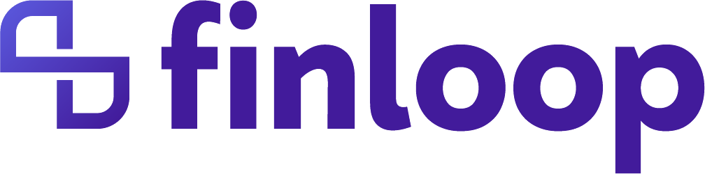

React
Interfaces web
 Irvyn Xicale Cabrera
Contacto
Irvyn Xicale Cabrera
Contacto
Desarrollador web & móvil · Puebla, México
Convierto procesos complejos en productos digitales claros, escalables y humanos.
Perfil / enfoque
Soy un desarrollador apasionado por crear aplicaciones que optimicen y automaticen procesos.
Tengo experiencia construyendo soluciones web y móviles dinámicas, escalables y centradas en el usuario. Disfruto resolver problemas, innovar y mejorar continuamente la forma en que construyo productos.
Stack / capacidades
React y React Native en la interfaz.
Node.js, MongoDB y SQL en backend.
Git y AWS para entregar y operar.
Interfaces web
Experiencias móviles
Desarrollo de producto
Servicios y APIs
Datos y persistencia
Despliegue y operación
Versionado y colaboración
Backend y automatización
Trayectoria / formación
Fundamentos
Centro de Estudios Tecnológicos industrial y de servicios No. 67.
Universidad
Benemérita Universidad Autónoma de Puebla.
Finloop
Desarrollo y optimización de interfaces, implementación de lógica de negocio y participación en el levantamiento y refinamiento de requerimientos.
CP Digital
Construcción de una aplicación móvil desde cero, definición de su arquitectura con principios SOLID e implementación de APIs y endpoints para soportar la experiencia móvil.
Finloop
Desarrollo y liderazgo técnico de Finloop: creación de interfaces y APIs, implementación de módulos financieros, trabajo con MongoDB, pruebas automatizadas, revisión de código, despliegues en AWS y coordinación del equipo de desarrollo.
Selección / proyectos

Plataforma fintech · Full Stack
Plataforma financiera de extremo a extremo para gestionar solicitudes de crédito, pagos, amortizaciones, moratorios, expedientes y estados de cuenta. He participado en su evolución desde el frontend hasta el backend, diseñando interfaces operativas, APIs y reglas financieras que soportan procesos críticos del negocio.
Como Tech Lead, coordino decisiones técnicas y entregas del equipo, promuevo arquitectura mantenible, pruebas automatizadas y revisiones de código, y acompaño los despliegues y la operación en AWS. Integro herramientas de IA al flujo de desarrollo para acelerar el análisis, las pruebas y la documentación, mejorar la calidad de los entregables y reducir tiempos de implementación.
Producto personal · Web + MCP
Pizarrón digital para capturar avances diarios y conservar notas importantes en un espacio visual, rápido y fácil de consultar. Organiza el trabajo por fecha sin convertir el seguimiento cotidiano en otro proceso pesado.
Diseñé y desarrollé el producto de extremo a extremo con React, Vite y Supabase, incluyendo autenticación con Google. Además, construí y publiqué un servidor MCP que permite registrar, consultar y actualizar avances directamente desde Cursor o Claude, reduciendo todavía más la fricción del proceso.
CP Digital · Aplicación móvil
Plataforma móvil disponible en Google Play y App Store para administrar inventarios de vehículos seminuevos, desde su compra y valuación hasta la venta. El producto permite decodificar VIN, controlar unidades entre agencias, publicar en marketplaces y dar seguimiento a prospectos.
Como desarrollador Full Stack y Móvil en CP Digital, participé en la construcción de sus primeras versiones desde cero: experiencia en React Native, arquitectura de software con principios SOLID e implementación de los servicios y endpoints necesarios para conectar la operación móvil.
Primer lugar · Lobo Hackathon
Chatbot de productividad que convierte WhatsApp en una interfaz directa para Notion. Mediante mensajes conversacionales permite capturar y organizar notas, programar eventos y gestionar tareas sin abandonar una aplicación que las personas ya utilizan todos los días.
Desarrollado durante el Lobo Hackathon, el proyecto conectó el flujo de mensajería con la API de Notion mediante un backend propio. Construimos un prototipo funcional de extremo a extremo bajo una ventana de entrega exigente y obtuvimos el primer lugar.
Tecnología educativa
Aplicación móvil diseñada para digitalizar y agilizar el control de asistencia escolar. Sustituye registros manuales por una experiencia clara y confiable, centralizando la información de los alumnos y mejorando la trazabilidad de cada registro.
Desarrollé una solución multiplataforma con React Native y Supabase, conectando la experiencia móvil con la persistencia de datos para reducir la carga operativa y facilitar la consulta de información.
Biología de campo
Aplicación móvil creada para transformar la recolección de datos biológicos en campo en un proceso digital, ordenado y consultable. Permite concentrar observaciones y registros en una sola herramienta, reduciendo la dependencia de formatos manuales y facilitando el seguimiento de la información.
Desarrollé la experiencia móvil responsiva, el modelado y las consultas sobre SQLite, y una arquitectura MVC que separa la interfaz, la lógica y los datos para mantener el proyecto claro, escalable y fácil de evolucionar.
Hackathon Morelos
Plataforma de impacto social concebida para conectar a personas que requieren asistencia con cuidadoras especializadas. Centraliza la búsqueda y el contacto, reduciendo la fricción al encontrar el apoyo adecuado y facilitando una comunicación clara desde el primer acercamiento.
Durante el Hackathon Morelos construimos un prototipo funcional de extremo a extremo, transformando una necesidad real en una experiencia digital con JavaScript y un backend desarrollado en Java con Spring Boot.
¿Construimos algo?